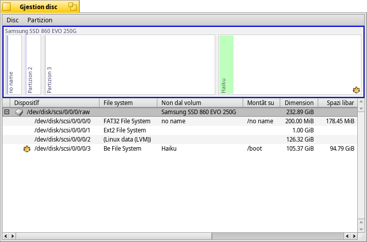
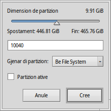
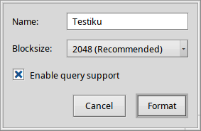

Gjestion disc
Gjestion disc
| Deskbar: | ||
| Posizion: | /boot/system/apps/DriveSetup | |
| Impostazions: | ~/config/settings/DriveSetup |
Gjestion disc al è un strument par creâ, eliminâ e formatâ partizions. Pal moment nol pues ridimensionâ o spostâ lis partizions esistentis, siche duncje ti covente o un volum no partizionât (forsit une unitât USB esterne o un altri disc fis) opûr fâ la configurazion iniziâl cuntun altri strument come il GParted LiveCD par creâ il spazi par une altre partizion.
Te part superiôr e je une rapresentazion grafiche di dutis lis partizion dal dispositîf che si à sielt de liste disot. Ogni dispositîf, in maniere predefinide, al pues tignî un massim di 4 partizions primaris. Chest limit al pues jessi superât fasint deventâ une di chês une partizion estese, che a sô volte e pues tignî, in teorie, un numar ilimitât di partizions logjichis (lis limitazions pratichis a dipendin dai, par esempli, altris SOs instalâts).
Tu podaressis vê di espandi chê liste cul widget +/- che in chel câs al ven fûr denant dal dispositîf, cussì di viodi i detais di ogni partizion logjiche.
Colôrs e iconis a furnissin cualchi informazion in plui sui volums disponibii e lis partizions.
Di là di dutis lis iconis familiârs pai discs fis, unitâts CD e clavutis USB e vie indenant, e je cualchidune che e indiche la lôr modalitât di montaç:
| La partizion /boot | ||
| Une partizion cifrade | ||
| Une partizion condividude vie SMB/NFS ... | ||
| Une partizion montade in dome-leture | ||
| Un file di imagjin montât (viôt ancje il comant diskimage) |
Cuant che si à montât (une partizion/file imagjin/...), une sbare colorade e mostre il spazi doprât di une partizion. Il colôr al dipent dal gjenar di partizion:
| Une partizion formatade in BFS | ||
| Une partizion NO formatade in BFS | ||
| Une partizion in dome-leture | ||
| Une partizion cifrade |
Tu puedis selezionâ une partizion e sielzi varis comants dal menù contestuâl o dal menù , come / o .
Tu puedis ancje fâ par formatâ o par eliminâ dal dut une partizion.
 Inizializâ un disc
Inizializâ un disc
Se no tu progjetis di doprâ dome une des partizions di un disc plui grant, ma la unitât interie come une uniche partizion, par esempli une clavute USB o un schede Compact Flash, tu varâs prime di inizializâ il disc.
Chest tu lu fasis selezionant il disc grês de liste dai dispositîfs e sielzint une mape di partizionament dal menù . La e je la sielte juste pal classic inviament vie BIOS.
Creazion di une gnove partizion
Cuant che tu âs cjatât un toc di spazi no formatât suntune unitât, come il parsore <empty> (vueit), tu puedis creâ une gnove partizion in chel spazi lì cun (ALT C).
Ti si presente chest dialic che ti permet di justâ la dimension de partizion e il sô gjenar. Sielç se tu desideris doprâ la partizion pe instalazion di Haiku o se tu desideris doprâ Haiku cun dutis lis sôs funzionalitâts interessantis, come par esempli i atribûts e lis interogazions. Fâs câs che altris sistemis operatîfs a podaressin no rivâ a jentrâ in chest gjenar di partizion.
La casele di selezion e je disponibile dome se tu âs creât une partizion primarie invezit che une altre partizion logjiche jenfri une estese. Tu varâs di segnâ chê casele di selezion se tu progjetis di doprâ chê partizion par inviâ une instalazion di Haiku.
Prime di podêle doprâ o ancje montâ, la partizion apene creade e à di jessi formatade cuntun filesystem.
Formatâ une partizion
Dome lis partizions dismontadis a puedin jessi formatadis, par fâlu si sielç un filesystem dal sot-menù di . Il (BFS) al è obligatori par une partizion di inviament di Haiku e conseât pes partizions di dâts che a àn di jessi dopradis cun Haiku. Dome lis partizions formatadis in BFS a puedin jessi interogadis e supuartâ dal dut i atribûts dai file di Haiku.
Chi tu stabilissis il non pe partizion e la sô dimension dai blocs. La dimension dal bloc al è il spazi minim in byte che un file al ocuparà. 2048 byte par bloc a son conseâts, ma tu puedis sielzi dimensions plui grandis o piçulis se tu âs chestis necessitâts.
Se i dâts che tu metarâs te partizion no varan bisugne de interogazion, tu puedis gjavâ la crosute di par sparagnâ un pôc di lavôr tal gjestî la tabele.